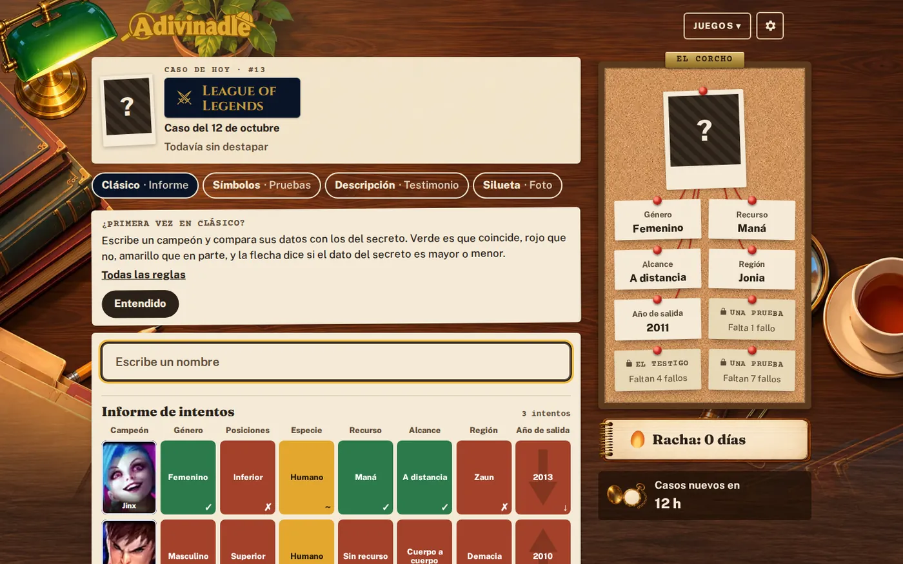
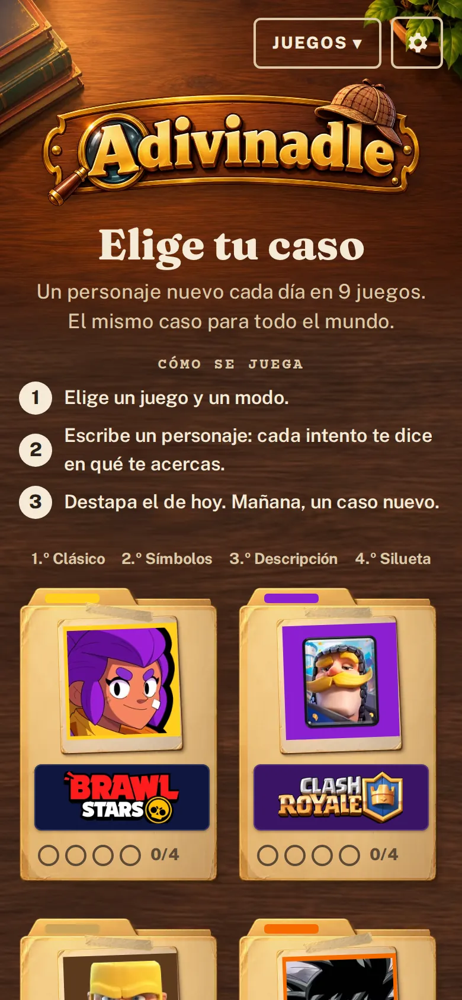

Adivinadle
Juegos diarios de adivinar personajes de videojuegos: un producto completo en producción, construido dirigiendo agentes de IA.
- Qué hice
- Producto, arquitectura, revisión y operación
- Cuándo
- Desde septiembre de 2026
- Dónde verlo
- adivinadle.com
- Código
- Repositorio privado; acceso de lectura para entrevistas
- 9 juegoscon 4 modos cada uno
- ~1.800personajes con datos revisados
- 1,5–1,7 sde carga de la portada, medido en cada cambio
- 0saltos de diseño al cargar
El producto
Cada día hay un personaje secreto en cada juego y todo el mundo juega el mismo reto. Lo diseñé, decidí cada pieza y lo llevé a producción dirigiendo agentes de IA (Claude Code y Codex): ellos escriben el código; yo pongo el producto, la arquitectura, la revisión y el sistema de calidad que no deja pasar nada sin pruebas.
Nueve juegos y cuatro modos: clásico por atributos, símbolos, descripción y silueta. El reto cambia a las 00:00 de España y la solución nunca sale de la API mientras está en juego.

Arquitectura
API en Laravel 13 con Octane, PostgreSQL y Redis; web en Astro 7 renderizada en el servidor con islas de Svelte 5. Entre las dos hay un contrato OpenAPI versionado: si la API cambia la forma de una respuesta, las pruebas de la web se ponen en rojo.
Calidad que no depende de acordarse
- Pruebas obligatorias
- PHPStan al nivel máximo y Pest en la API; tipos y Vitest en la web. Nada llega a producción sin pasar.
- De punta a punta, en móvil y escritorio
- Playwright con auditoría de accesibilidad y Lighthouse en cada cambio.
- Revisiones independientes
- Antes de lanzar, otro modelo revisa el producto como un jugador y como un auditor. Sus hallazgos se atienden y quedan escritos.
Que una IA genere el código no significa que esté listo para producción: la calidad la pone el sistema que hay alrededor.
En producción
Autoalojado en mi servidor, detrás de Cloudflare, con copias diarias, cabeceras de seguridad, límite de peticiones y una vigilancia externa que comprueba que la web responde y que el reto de hoy existe.
